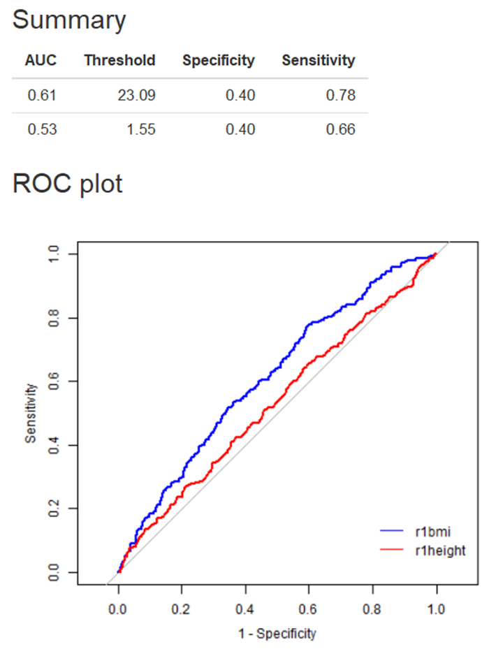
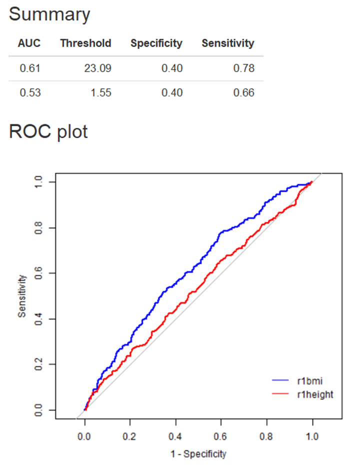

2、数据变量名必须为英文、阿拉伯数字或下划线的组合
3、自变量（Explanatory variable）可以输入多列，以英文状态下的逗号或冒号分隔，如：2,3,4或2:4
4、 此分析为单变量AUC分析，如要观察多个变量的联合效应，需先构建具体的预测模型
示例如下：

| ROC曲线 | 一、数据格式 | ||
|
|||
|
|||
| 注：
2、数据变量名必须为英文、阿拉伯数字或下划线的组合 3、自变量（Explanatory variable）可以输入多列，以英文状态下的逗号或冒号分隔，如：2,3,4或2:4 4、 此分析为单变量AUC分析，如要观察多个变量的联合效应，需先构建具体的预测模型 |
|||
| 二、输出结果展示 | |||
| 输出结果包括AUC值、最佳截断值的灵敏度、特异度以及相应的ROC曲线。 示例如下：  |
|||